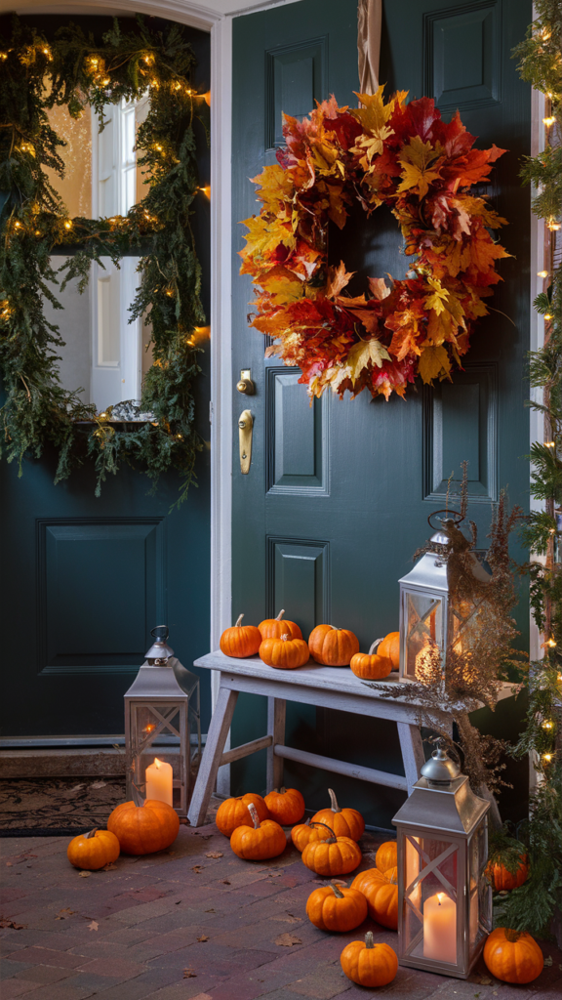
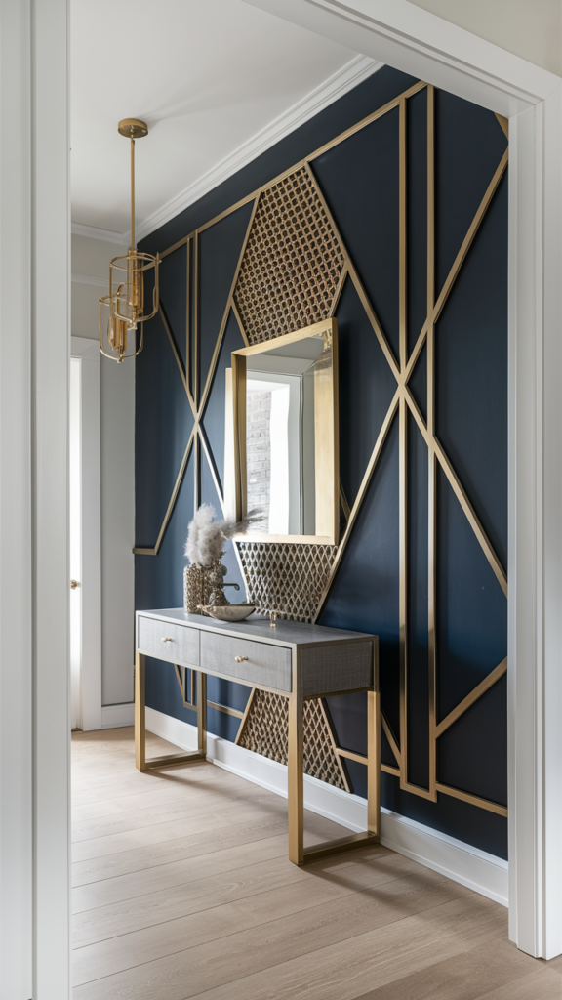
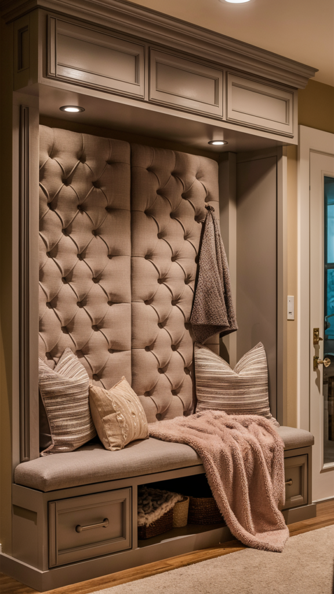
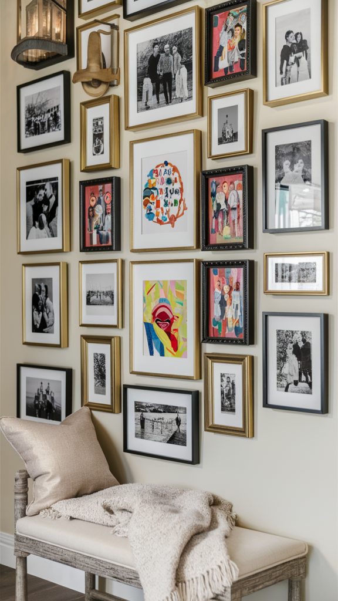
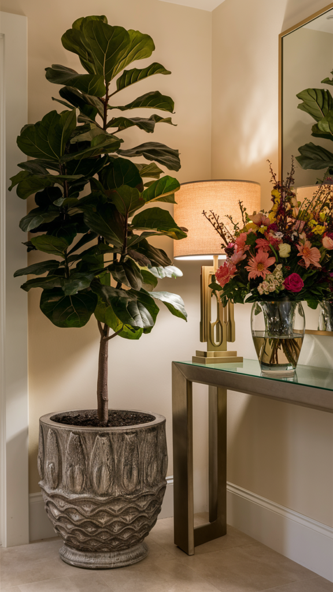
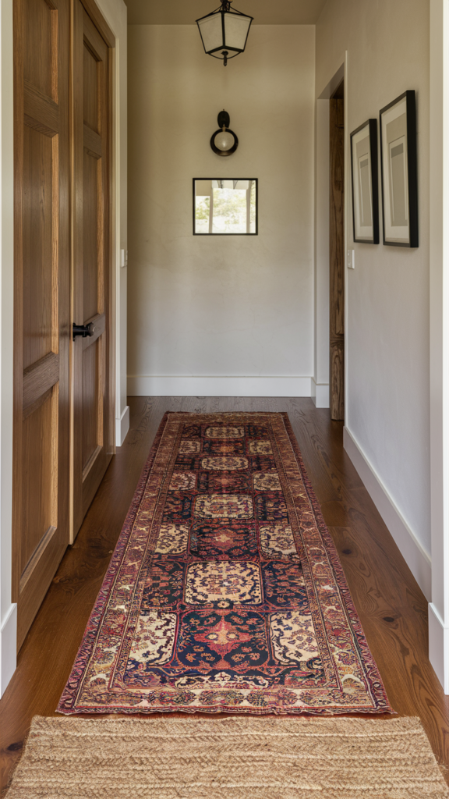
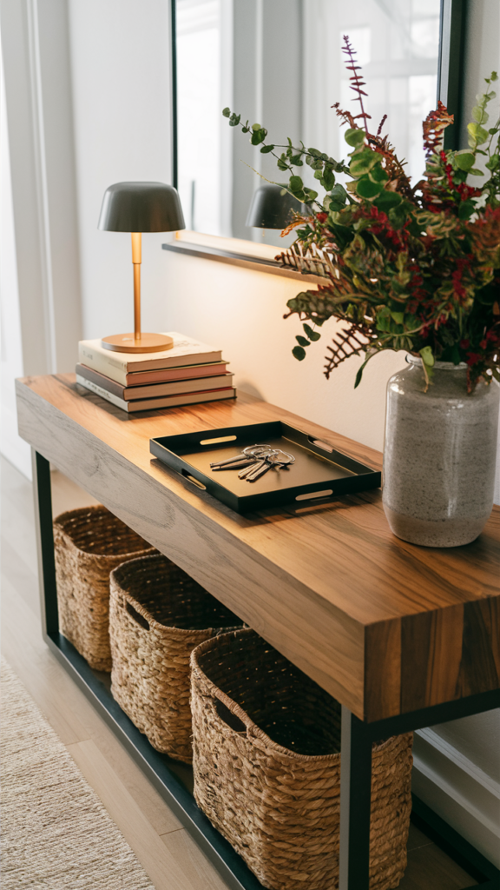
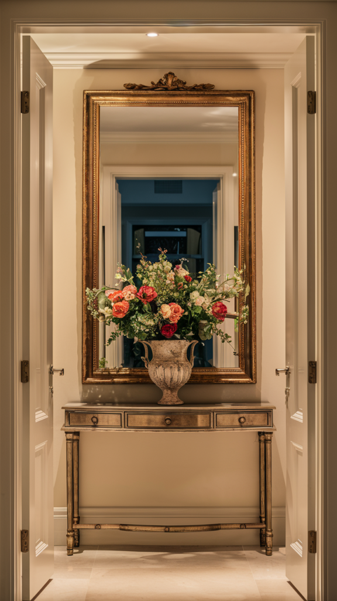
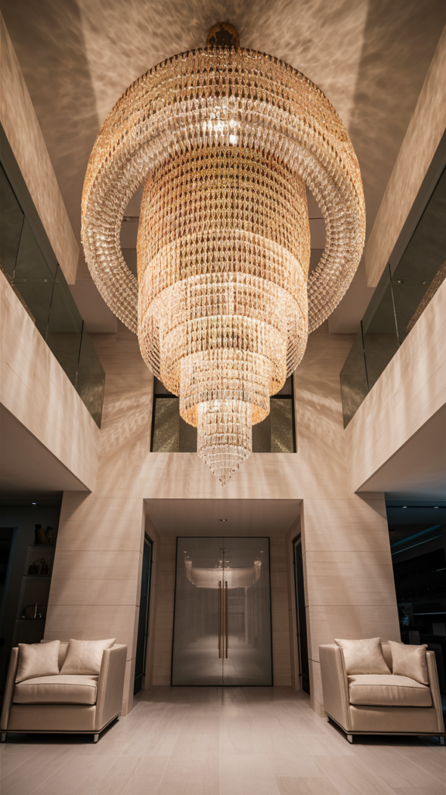

Your entryway is the handshake of your home, it's the very first thing anyone sees, and it quietly sets the tone for everything beyond it. Whether you're working with a grand foyer or a narrow little hallway, the right details make the space feel instantly welcoming.
Here are ten genuine ways to get there, from the five-minute swaps to the ones worth a weekend of effort.

10 Entryway Ideas Worth Trying
1. Seasonal Touches
An entryway doesn't need to look identical year-round. Swapping in a few seasonal details keeps the space feeling current without any real commitment.
A wreath, a garland, or a simple seasonal sign marks the time of year without much effort. Mini pumpkins and warm lanterns for fall, then greenery and twinkle lights for winter, cover most of the calendar on their own.
It's a small, inexpensive habit that keeps the entrance feeling intentional instead of static.

2. Seating That Actually Gets Used
A bench or a pair of stools isn't just decorative in an entryway, it's genuinely practical the moment you're wrestling with a pair of boots.
A bench with storage underneath pulls double duty, giving you a place to sit and somewhere for shoes to disappear to at the same time. A soft cushion or a folded throw keeps it from feeling purely utilitarian.
Once it's there, it tends to become the default spot for bags, guests, and anyone pausing on their way in or out, more useful than most people expect going in.
3. A Bold Accent Wall
If you want real drama, this is where to spend it. Paint, wallpaper, or architectural paneling on one entryway wall turns a pass-through space into a genuine moment.
Deep navy, emerald, or charcoal all bring sophistication fast. Bold wallpaper adds a designer-level finish, and wood paneling or slats bring texture and warmth without relying on color at all.
Geometric paneling with metallic trim is a more involved project but the payoff reads as genuinely custom.

4. Built-In Storage
Entryways are magnets for shoes, bags, and jackets in various states of abandonment. Built-in storage is the single most effective fix for that chaos.
Cubbies, hooks, and shelving keep everything assigned to a spot. Baskets handle the smaller items you want out of sight but still easy to grab on the way out.
No built-ins in the budget or the walls? A slim storage bench or a simple standing coat rack handles a surprising amount of the same job.

5. A Gallery Wall
Gallery walls don't need to stay confined to the living room. An entryway is genuinely prime real estate for showing a little personality before guests even get further inside.
Mix family photos, art prints, and the odd quirky piece for something personal, or keep frames uniform in black and gold for something more polished. Either direction works.
You don't need to finish it in one weekend, either. Starting with a handful of pieces and building over time usually looks more considered than rushing to fill every inch at once.

6. Greenery
Plants make nearly every entryway feel more alive, full stop. Even a single well-placed one changes how the whole space reads.
A tall fiddle-leaf fig or a low-maintenance snake plant both deliver a big visual impact without much upkeep. If you don't have the time or light for a real plant, a good faux version genuinely works just as well here, nobody's touching it to check.
Fresh flowers on a console table are a smaller, more frequent way to bring in color and life without committing to a permanent plant.

7. Layered Rugs
Layering rugs in an entryway adds texture and warmth in a way a single flat rug never quite manages.
Start with a large, neutral base, jute or sisal both hold up well to foot traffic. Layer something smaller and more patterned on top for a collected, intentional look.
A vintage-style runner over a woven base is a combination that photographs beautifully and still holds up to daily shoes and weather.

8. A Console Table That Earns Its Keep
A console table is where function meets styling. It's a surface for a lamp, a vase, a tray, but it's also the spot where keys, mail, and sunglasses actually land instead of scattering through the house.
Baskets or drawers underneath hide the practical stuff out of sight, while the top stays free for whatever you want to look at. A tray specifically for keys and everyday essentials solves the "where did I put that" problem almost instantly.
Once you have a dedicated landing spot like this, the daily chaos of walking in the door gets noticeably calmer.

9. A Decorative Mirror
Mirrors do real work in an entryway, they bounce light around, make a tight space feel larger, and double as a last-glance check on your way out the door.
Go oversized for a genuine statement, or cluster a few smaller, uniquely framed mirrors for something more eclectic. Position one across from a window and you'll effectively double the natural light in the space.
An ornate vintage frame adds character fast; a clean modern frame keeps things simple. Either way, this is one of the easiest upgrades to make a real visual difference.

10. Statement Lighting
A fixture that actually says something changes an entryway faster than almost anything else on this list. A chandelier, a sculptural pendant, or even a well-chosen pair of sconces takes the space from forgettable to memorable.
Match the fixture to the rest of your home's style, clean geometric shapes for something modern, a crystal piece if you're leaning classic. Scale matters too: a fixture that's too small reads as an afterthought, and one that's too large becomes a hazard.
Swapping a dated builder-grade fixture for something with real presence is one of the highest-impact, lowest-effort upgrades an entryway can get.

Final Thoughts
Your entryway is more than a pass-through space, it's the first chapter of your home's whole story. Whether you lean into bold statement lighting, cozy layered rugs, or a gallery wall full of personality, each of these ideas pushes the space a little closer to feeling genuinely like you.
Pick whichever one you keep circling back to, and just start there. The rest of the entryway tends to follow naturally once the first piece is in place.